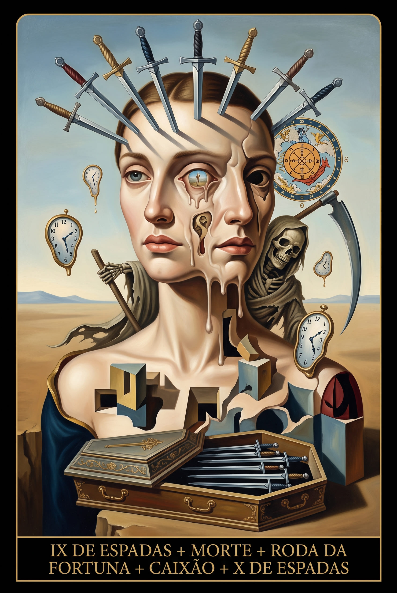
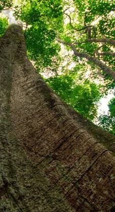
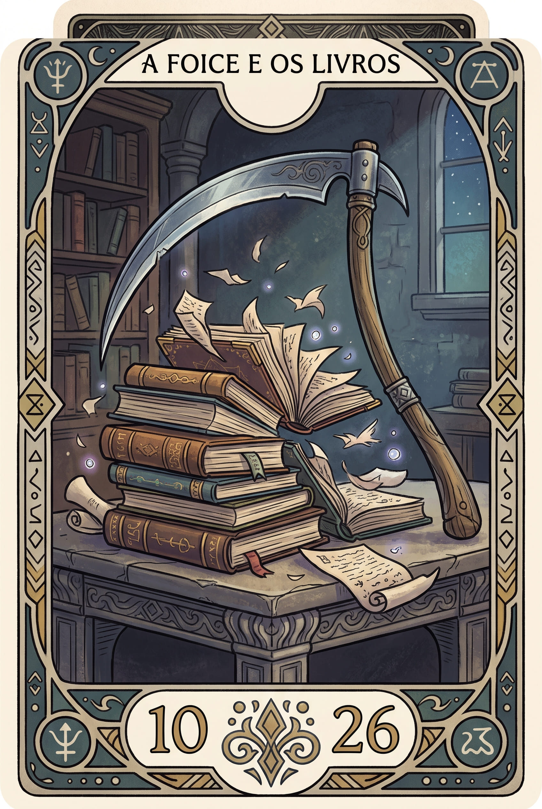
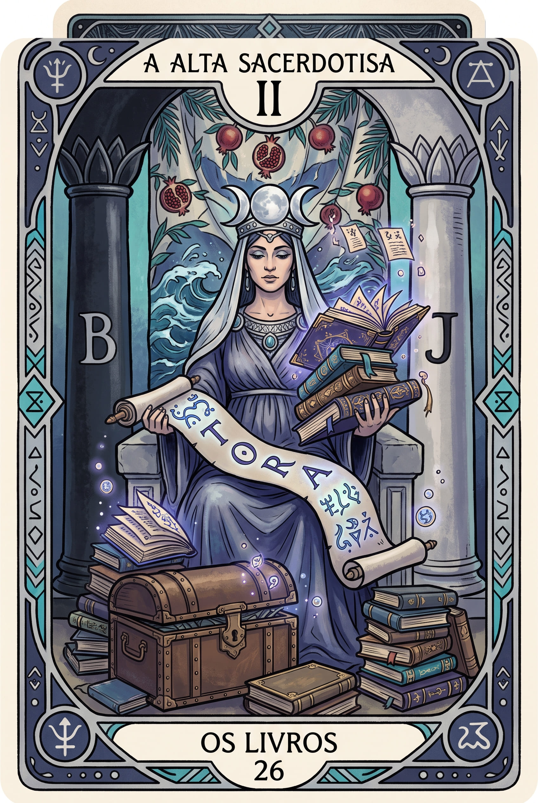
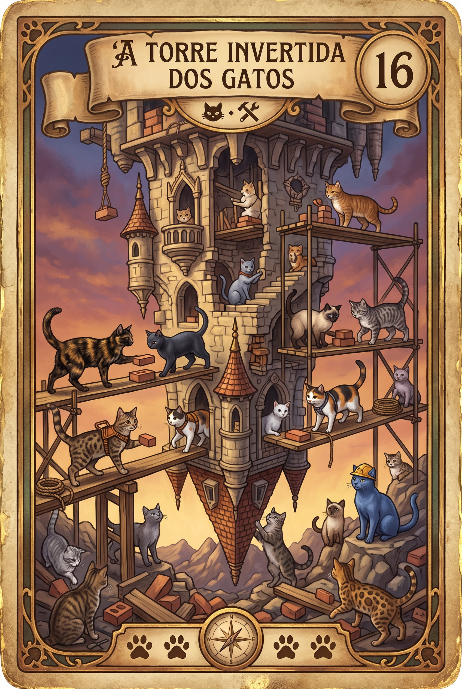
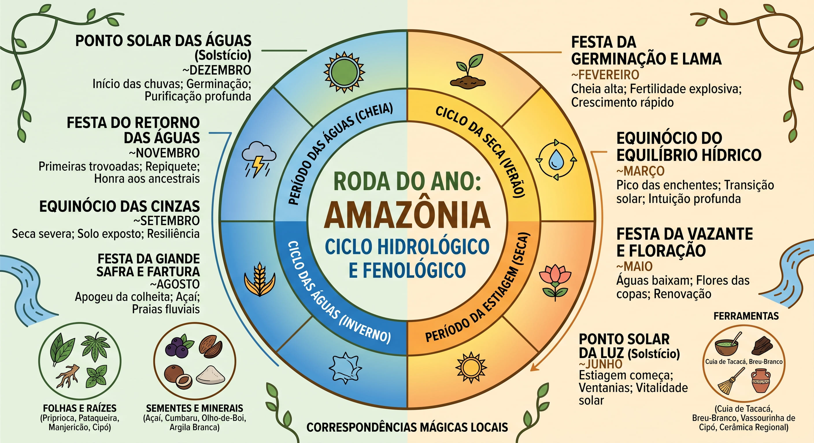

Memórias Póstumas



A Roda do Ano é um calendário simbólico e ritualístico que mapeia a passagem do tempo através dos ciclos naturais da Terra e do cosmos, servindo como uma bússola para sintonizar a vida humana com as transformações da natureza. Originalmente estruturada em oito festivais que marcam as mudanças de estações e colheitas, sua função essencial na magia natural não é prender-se a datas rígidas de outras regiões, mas sim observar e honrar o ritmo biológico e climático do próprio ambiente habitado — seja a alternância de calor e frio, ou o fluxo vital das águas, secas e safras locais.
MaisArraste para desvendar


Um relato interativo moldado por decisões lógicas. Este diário narrativo explora tempos sombrios , onde cada ramificação decisiva revela consequências únicas.

Uma base de conhecimento ágil e dinâmica. Estruturada para fornecer atalhos de desenvolvimento, lógicas de programação e resoluções rápidas quando os sistemas exigem respostas imediatas.
O repositório onde a teoria fundamenta a magia. Um acervo de livros, artigos e pesquisas fundamentais para a construção de arquiteturas de software sólidas e narrativas bem projetadas.

Um experimento narrativo em constante mutação. Construído em formato de diário, este projeto abandona a lógica linear tradicional para gerar um ecossistema de informações desconexas que desafiam a dedução.


A integração do tempo com o código. A Roda do Ano transcreve as mudanças do clima e das colheitas em variáveis lógicas, transformando ciclos biológicos milenares em algoritmos que guiam a interface.
A Roda nunca para de girar e o aprendizado nunca cessa. Este grimório é um registro vivo de projetos, narrativas e linhas de código em constante evolução. Se você busca compreender a lógica que move essas criações ou está pronto para escrever a sua própria história na tecnologia, as portas estão abertas.
Nos encontramos no próximo ciclo.
Invocar ContatoEm breve 😊